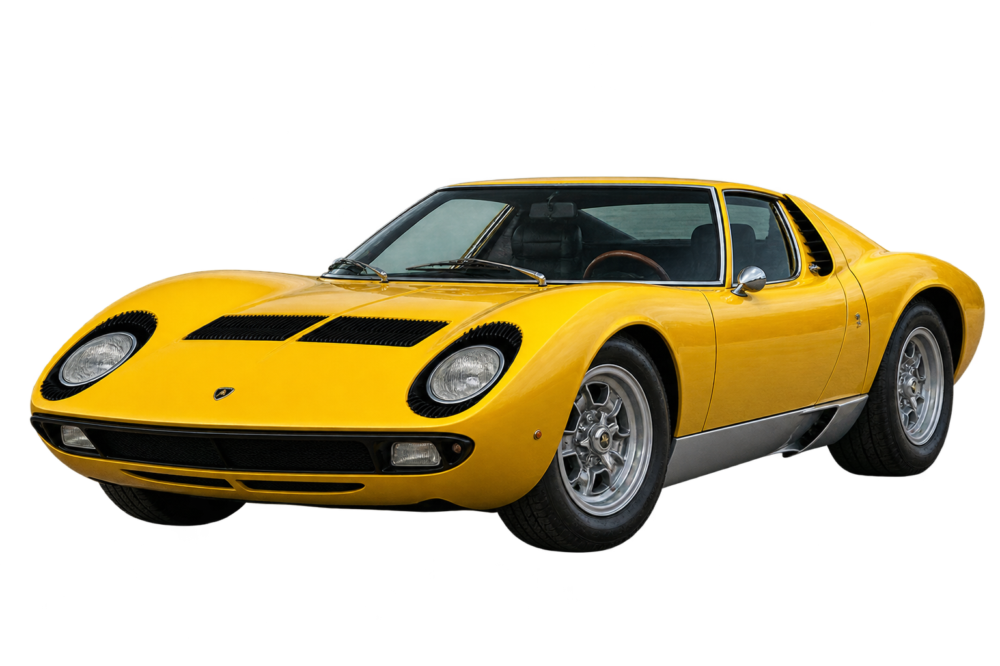
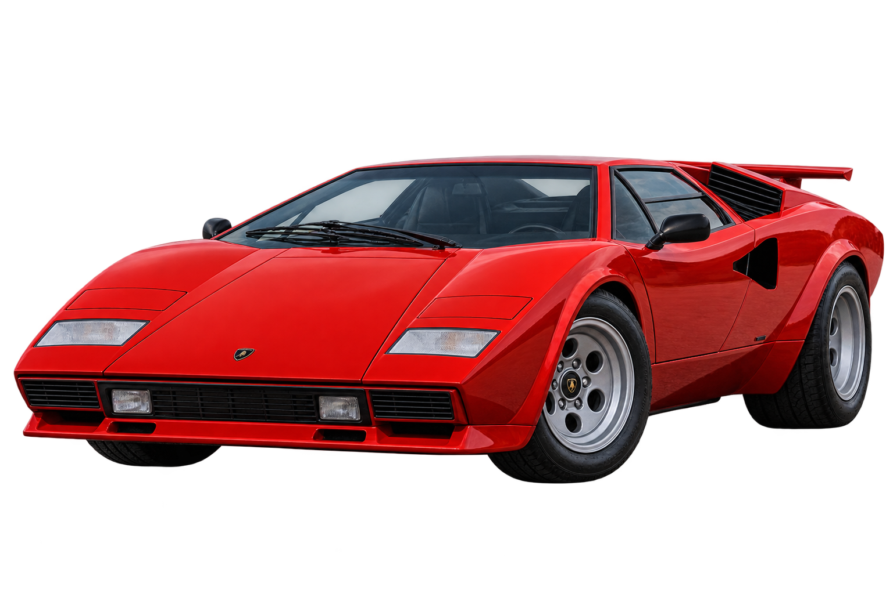
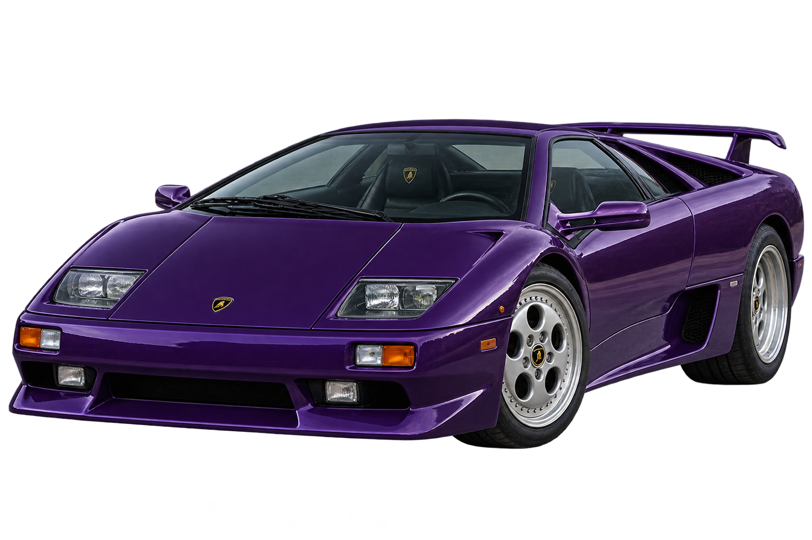
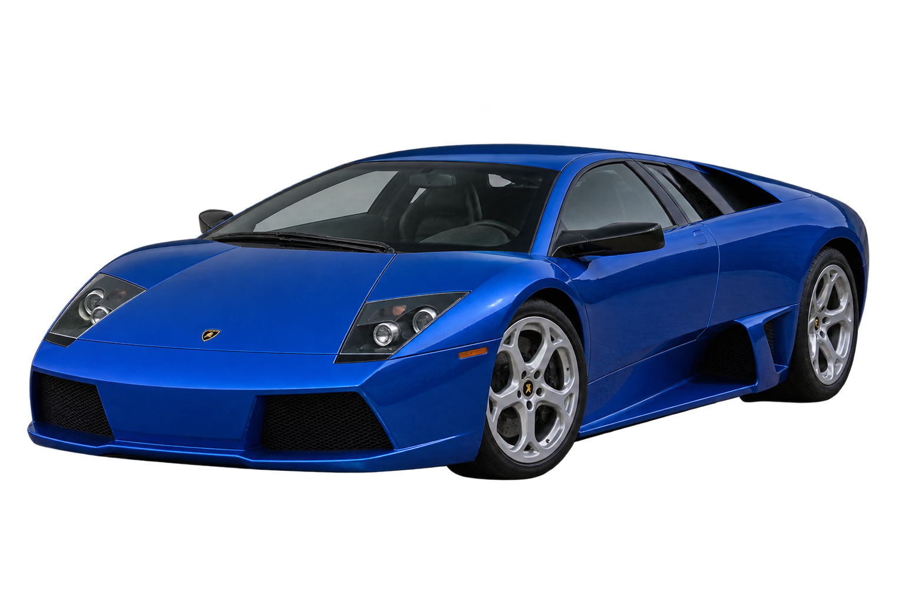
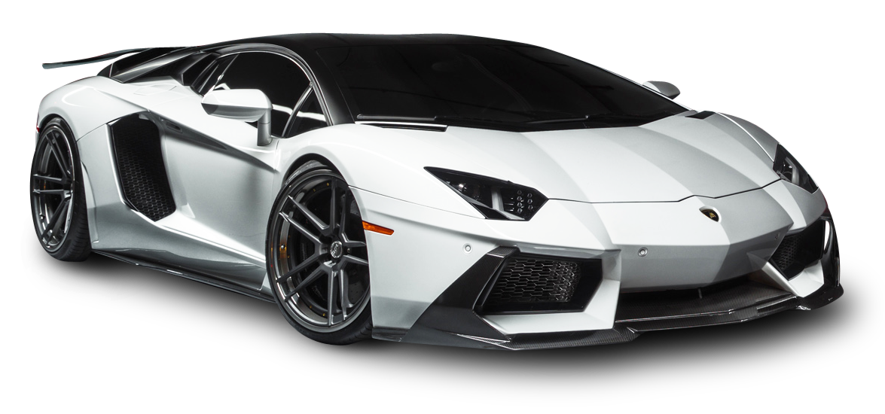
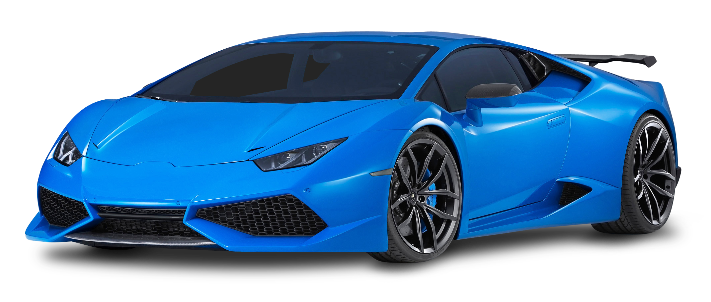

Lamborghini Miura (1966)
O primeiro supercarro moderno da história, famoso por colocar o motor V12 no meio do carro e por seu design belíssimo.

Lamborghini Countach (1971)
Criou o visual futurista com linhas em cunha e as famosas portas que abrem para cima (em tesoura).

Lamborghini Diablo (1990)
O ícone dos anos 90 e o primeiro carro da marca a quebrar a barreira dos 320 km/h.

Lamborghini Murciélago (2001)
O primeiro modelo lançado sob a gestão da Audi, combinando a brutalidade do V12 com engenharia alemã moderna.

Lamborghini Aventador (2011)
Monstro com motor V12 aspirado puro e chassi de fibra de carbono, marcando a última era 100% a combustão.

Lamborghini Huracán (2014)
Evolução do Gallardo com motor V10, conhecido por sua usabilidade diária e desempenho impecável em pistas de corrida.